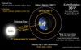

sidereal-day

Definition: Sidereal time (as a unit also sidereal day or sidereal rotation period) (sidereal sy-DEER-ee-əl, sə-) is a timekeeping system that astronomers use to locate celestial objects. Using sidereal time, it is possible to easily point a telescope to the proper coordinates in the night sky. Sidereal time is a "time scale that is based on Earth's rate of rotation measured relative to the fixed stars."Viewed from the same location, a star seen at one position in the sky will be seen at the same position on another night at the same sidereal time. This is similar to how the time kept by a sundial (Solar time) can be used to find the location of the Sun. Just as the Sun and Moon appear to rise in the east and set in the west due to the rotation of Earth, so do the stars. Both Solar time and sidereal time make use of the regularity of Earth's rotation about its polar axis: solar time follows the Sun while, roughly speaking, sidereal time follows the distant fixed stars on the celestial sphere.
Source: Wikipedia
Wikipedia Page (Something wrong with this association? Let us know.)
Wikidata Page (Something wrong with this association? Let us know.)
Occurs in: